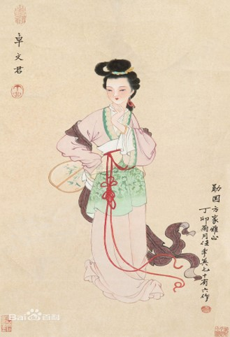

중국 역사에서 '봉구황'（鳳求凰）의 러브스토리는 거의 다 알려져 있는데, 이 이야기의 두 주인공은 바로 사마상여（司馬相如）와 탁문군（卓文君）이다.
사마상여(司馬相如)는 사천성도(四川成都) 출신으로 어려서부터 시서를 좋아했고, 펜싱을 배웠으며, 음악에도 조예가 깊어 촉군태수 문옹(文的)의 인정을 받아 장안(長安)에 파견되어 공부하다가 학업을 마치고 돌아와 교수로 임명되어 촉지의 자제를 가르쳤다.문옹이 세상을 떠난 후, 사마상여는 선생이 되는 것이 달갑지 않아 장안으로 유학하여 미래를 도모하였다.그러나 몇 번의 노력에도 본적은 무명이고, 게다가 부모님이 돌아가시고, 사마상여은 산과 물이 다 떨어졌을 때, 자신의 절친한 친구인 왕길에게 몸을 의탁할 수밖에 없었다.
당시 현령이었던 왕길은 친구를 잊지 않고 사마상여(司馬相如)를 반갑게 맞아주었고, 현의 대부호 탁왕손(卓王孙)의 딸 탁문군（卓文君）을 구한다면 평생 의지할 수 있을 것이라고 생각했다.탁가의 관심을 끌기 위해 왕길은 사마상여(司馬相如)를 현에서 가장 좋은 호텔에 배치하고 매일 찾아다니며 기세를 올려 사마상여(司馬相如)를 귀빈의 이미지로 만들었다.
현 태야께서 귀빈을 오셨는데, 이 소식은 곧 현에 널리 퍼졌다.그래서 사마상여(司馬相如)는 귀빈의 모습으로 탁왕손(卓王孙)의 집에 들어갔다.사마상여(司馬相如)의 문학적 수양은 탁왕손(卓王孙)에게 좋은 인상을 남겼고, 사마상여(司馬相如)의 <봉구황>（鳳求凰）은 병풍 뒤의 탁문군（卓文君）의 마음을 크게 움직이게 했고, 두 사람은 첫눈에 반했고, 한밤중에 몰래 청두로 달려갔다.

그러나 이상은 풍만하고 현실은 뼈아프다.그들이 청두에 도착했을 때 탁문군（卓文君）은 사마상여(司馬相如)가 이렇게 가난하다니, 전혀 학자 집안도 아니고, 귀족 공자도 아니고, 기본적인 생활 보장도 없다는 것을 알게 되었다.하지만 존경할 만한 것은 탁문군（卓文君）이 불평하거나 자신의 선택에 실망하지 않았다는 것입니다, 그녀는 사마상여(司馬相如)를 본 것이지, 몸 밖의 것이 아닙니다.그래서 탁문군（卓文君）은 자신의 값나가는 물건을 모두 팔고, 돈으로 옷을 사고, 소금을 사고, 술을 사서, 이 가정을 지탱해 나갔고, 결국 더 이상 팔 수 없게 되었다. 어찌할 수 없이 탁문군（卓文君）은 사마상여(司馬相如)에게 "네가 추위에 떨면 결국 장책이 아니니, 차라리 임충에서 형제에게 돈을 빌려야 생계를 도모할 수 있다"「君一寒至此，終非長策，不如再往臨邛，向兄弟處借貸錢財，方可營謀生計。」고 말했다.사마상여(司馬相如)도 어쩔 수 없이 탁문군（卓文君）을 따라 임충으로 돌아왔다.그러나 이때 탁왕손은 딸의 도피에 분노하고 있었고, 그들에게 돈을 줄 수도 없었다.탁문군（卓文君）은 사마상여(司馬相如)에게 남은 마차를 팔게 하고, 작은 집 몇 칸을 빌려 술집을 차리고, 자신은 웨이터 노릇을 하고, 사마상여(司馬相如)는 바텐더 노릇을 하며, 큰 아가씨와 문화인의 이미지를 전혀 고려하지 않고 일시에 현성을 뒤흔들었다. 그래서 탁왕손(卓王孙)은 화가 나서 반쯤 죽고 친척과 친구들은 소식을 듣고 탁왕손(卓王孙)을 설득하러 왔고, 탁왕손(卓王孙)은 어쩔 수 없이 이 혼사를 인정하여 탁문군（卓文君）에게 준비한 혼수를 탁문군（卓文君）에게 건네주고, 백 명의 가동을 지급하고, 많은 돈을 주고, 청두로 돌아가 잘 살도록 하였다.그래서 탁문군（卓文君）과 사마상여(司馬相如)는 청두에 집을 사서 우물을 사서 문군우물이라고 이름 지었는데, 물이 맑고 달아서 술을 담그기에 좋았고, 우물가에 거문고 대를 만들어 두 사람은 늘 마주앉아 술을 마시며 시를 읊었다.'<미인부>《美人婦》'는 사마상이 탁문군（卓文君）에 대한 경외와 애모의 마음을 표현한 작품이다.

나중에 사마상여(司馬相如)가 상경하여 면군하라는 성지를 받았는데, 이때의 국군이 바로 한나라 무제(漢武帝)였다.원래 한 무제(漢武帝)는 사마상여(司馬相如)가 널리 알려진 그 <자허부>(《子虚赋》)를 읽고 크게 칭찬하여 그를 기용하려 하였다.사마상여는 문군（文君）과 잠시 헤어지고 단신으로 북상하여 <유렵부>(《遊獵賦》)로 한 무제(漢武帝)의 인정을 받아 낭관에 봉해졌다.곧 한 무제(漢武帝)는 사마상여가 성도 출신이라 그를 중랑장으로 봉하고, 한 무제(漢武帝)를 대표하여 서남으로 가서 각 부락을 안심시켰다. 이에 사마상여(司馬相如)는 인생의 정점을 찍었고 천하의 독자들은 감탄했다.하지만 탁문군（卓文君）은 뜻밖에도 사마상여(司馬相如)가 높은 자리에 올라 마음가짐도 달라졌고, 한때는 고난과 정을 함께 나누었는데, 지금은 사마상여(司馬相如)가 무심해지기 시작했습니다.그는 오랫동안 집을 떠나 있다가 때때로 몇 달째 소식이 전혀 없다.탁문군（卓文君）은 자신을 위로할 수밖에 없습니다.나중에 사마상여(司馬相如)가 일무릉 여자와 사이가 좋아 두 사람이 사귀었다는 소문이 돌았다.탁문군（卓文君）은 그제서야 사마상여(司馬相如)가 이미 새 애인이 있어 옛사랑을 잊었다는 것을 깨달았다. 사마상여(司馬相如)의 행동은 탁문군（卓文君）을 실망시켰고, 그녀는 사마상여(司馬相如)와 고난을 함께 했고, 그를 위해 자신의 모든 것을 바쳤지만, 그녀의 진심은 깊이를 바꾸지 못했고, 사마상여(司馬相如)는 탁문군（卓文君）과 헤어지겠다는 집서 한 통을 보내왔다.한 세대 재녀인 탁문군（卓文君）도 자존심을 버리고 <백두음>(《白頭吟》)을 쓰는 것을 용납하지 않고 사마상여(司馬相如)가 깨달았으면 좋겠다.다만 사마상여(司馬相如)가 탁문군（卓文君）의 시를 보고도 답하지 못한 것이 아쉽다.

낙담한 사이 탁문군（卓文君）은 <결별서>《訣別書》를 쓰고 이후 두 사람은 다시 만나지 않는다.탁문군（卓文君）은 혼자 살다가 원수 2년에 죽었고, 사마상여(司馬相如)도 3년 만에 세상을 떠났다. 새벽 바람의 달, 자정에 꿈에서 돌아올 때, 사마상여(司馬相如)가 후회할지 모르겠지만, 인생에는 어쨌든 그렇게 많은 깨진 거울이 없다.다정함은 자고로 여한이 있고, 이 한은 끝이 없다.
